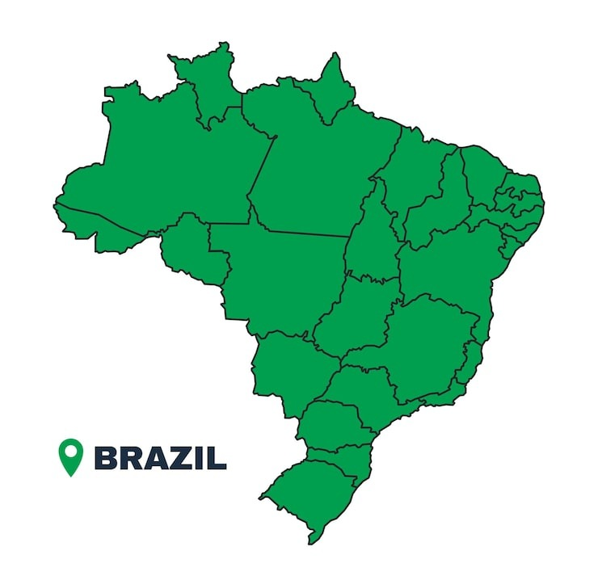

História das paralimpíadas
A prática esportiva para pessoas com deficiência começou em 1888 com clubes para deficientes auditivos em Berlim, mas cresceu expressivamente após a Segunda Guerra Mundial para reabilitar veteranos e civis lesionados. Em 1944, o neurologista Ludwig Guttmann fundou um centro especializado no Hospital Stoke Mandeville, na Grã-Bretanha, transformando o esporte terapêutico em competição.
O grande marco ocorreu em 29 de julho de 1948, quando Guttmann organizou os primeiros Jogos de Stoke Mandeville, com 16 ex-militares em uma prova di tiro com arco. O evento tornou-se internacional em 1952 com a chegada de competidores holandeses, servindo de embrião para as Paralimpíadas oficiais, que estrearam em Roma, em 1960, com 400 atletas de 23 países.
Desde então, as Paralimpíadas ocorrem a cada quatro anos, ganhando uma versão de Inverno em 1976, na Suécia. A partir dos Jogos de Verão de Seul (1988) e de Inverno de Albertville (1992), um acordo entre o CPI e o COI garantiu que as competições passassem a ser realizadas nas mesmas cidades e sedes dos Jogos Olímpicos.
O Brasil no esporte paralímpico
O Brasil consolidou-se como uma autêntica potência mundial no cenário esporte paralímpico, impulsionado por uma trajetória de crescimento acelerado a partir dos anos 2000. Essa evolução expressiva reflete o aumento de investimentos estruturados, políticas de inclusão esportiva e a governança do Comitê Paralímpico Brasileiro (CPB), que organiza e potencializa o desenvolvimento das modalidades no país.
O país mantém uma presença constante e respeitada entre as principais nações nos quadros de medalhas globais, sustentada por programas de base eficazes e pela criação de centros de treinamento de última geração. O foco contínuo na revelação de novos talentos assegura a competitividade do Brasil no cenário internacional, com um protagonismo histórico e avassalador em modalidades como o atletismo e a natação.
Origem dos Nossos Campeões
Clique nos pontos interativos do mapa para conhecer os atletas paralímpicos naturais de cada região:


Daniel D.

Terezinha Gui.
Clodoaldo S.
Atletas famosos
A história do esporte brasileiro é coroada por competidores lendários que redefiniram limites. Mais do que colecionar pódios e recordes expressivos, esses atletas carregam um impacto que ultrapassa as pistas e as piscinas. Eles personificam os valores fundamentais de superação contínua, disciplina rigorosa e resiliência diária diante dos desafios.
Daniel Dias
São PauloConsiderado um dos maiores nadadores paralímpicos de toda a história mundial. Conquistou uma galeria impressionante contendo dezenas de medalhas em pistas aquáticas.
Terezinha Guilhermina
Minas GeraisEspecialista consagrada em provas de velocidade em pista aberta. Tornou-se a maior referência e recordista absoluta do país dentro do atletismo cego.
Clodoaldo Silva
Rio Grande do NorteUm dos grandes pioneiros e precursores do sucesso da delegação brasileira na natação. Conhecido historicamente como o Tubarão das Piscinas.